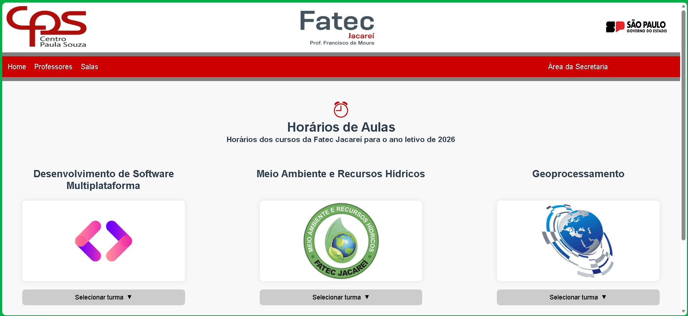
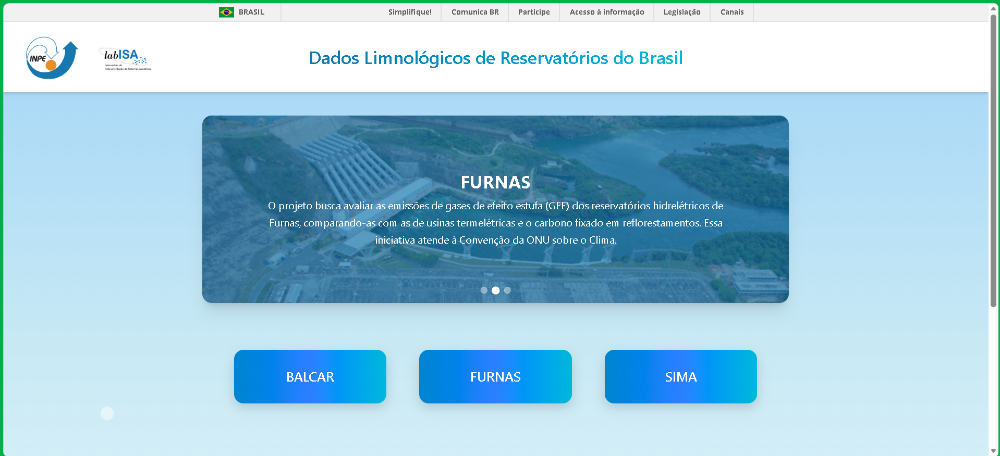
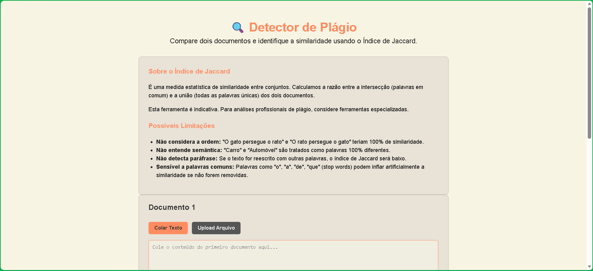
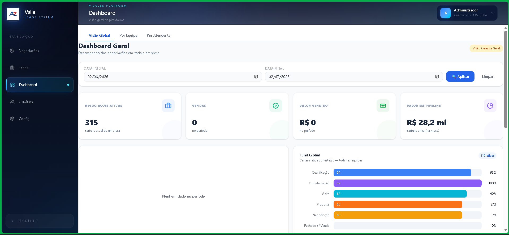
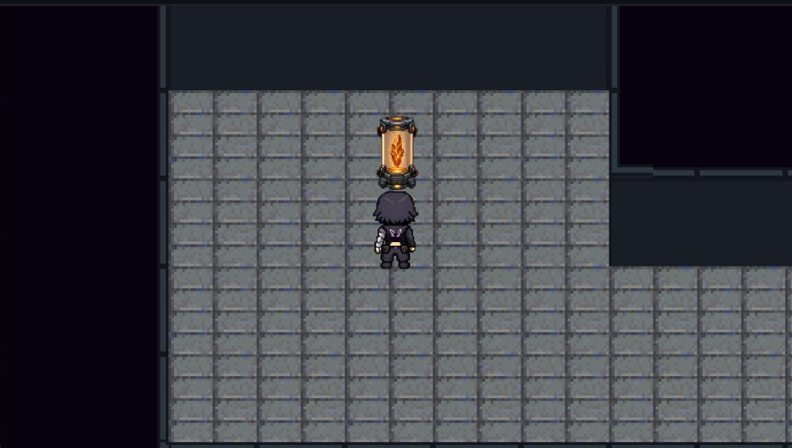

Olá, eu sou o Nicolas
Estudante de Desenvolvimento de Software & Desenvolvedor Full-Stack
TS
Postgres
MySQL
Mongo
Docker
Prisma
Sobre Mim
Sou uma pessoa curiosa, movida pelo desafio de entender a lógica e a arquitetura por trás de cada solução. Atuo no desenvolvimento Full-Stack, integrando a criação de interfaces modernas, intuitivas e responsivas no Front-end com a robustez de APIs, regras de negócio e modelagem de bancos de dados no Back-end, além de um forte interesse na área de Dados.
Minha vivência com SAP me ensinou o valor da precisão e consistência corporativa. Acredito que o melhor código nasce da clareza e do planejamento, preferindo construir soluções bem estruturadas, escaláveis e seguras a apenas "entregar rápido".
Sou autodidata e proativo, sempre buscando aprofundar conhecimentos práticos e alinhar boas práticas de engenharia de software a resultados reais.
Ferramentas e Conhecimentos:
- Full-Stack & Dados: Node.js, Express, TypeScript, JavaScript, React, PostgreSQL, MySQL, MongoDB, Prisma ORM, Docker, Python
- Metodologias e Ferramentas: SCRUM, Modelagem de Dados, Figma, UML, Git/GitHub, APIs RESTful
- Idiomas: Inglês (Intermediário — foco em leitura e documentação técnica) | Autodidata
JS
HTML
CSS
React
Python
Meus Projetos
Acadêmicos:

Gestão de Horários Acadêmicos
Projeto full-stack acadêmico
Sistema full-stack desenvolvido no 1º semestre do curso para otimizar e organizar a gestão de horários e alocação de salas e professores na Fatec Jacareí.
Contribuição Pessoal: Atuação em todo o ciclo de vida do projeto, sendo o principal responsável pela modelagem e implementação do banco de dados relacional em PostgreSQL. Desenvolvi a API em Node.js com Express aplicando programação assíncrona para consultas e manipulação dos dados, além de colaborar na integração com a interface web.
Tecnologias utilizadas: PostgreSQL, Node.js, Express, HTML, CSS, JavaScript

Disseminação de Dados Limnológicos
Projeto acadêmico em cooperação com INPE, UFRJ, UFJF e IIE
Plataforma web voltada à centralização, disponibilização e análise de dados limnológicos e meteorológicos de reservatórios da Furnas, integrando medições manuais e estações telemétricas em tempo real (SIMA) para apoio a estudos climáticos.
Contribuição Pessoal: Desenvolvimento da API RESTful no back-end para consumo e estruturação dos dados fornecidos pelo INPE, configuração e containerização dos bancos de dados com Docker, e desenvolvimento de componentes no front-end para exibição de mapas interativos, gráficos e tabelas.
Tecnologias utilizadas: React, TypeScript, Node.js, Express, PostgreSQL, Docker, Chart.js, Leaflet

Detector de Plágio
Aplicação de análise de similaridade textual com PLN
Aplicação web interativa para análise de similaridade textual entre documentos utilizando o
Índice de Jaccard.
A ferramenta permite refinar os resultados com técnicas de Processamento de Linguagem Natural
(PLN).
O usuário pode aplicar filtros como remoção de stopwords, stemming e análise por bigramas, além
de processar textos via input ou upload de arquivos (.txt).
O sistema realiza o cálculo da similaridade entre os conjuntos gerados e apresenta os resultados
de forma clara.
Tecnologias utilizadas: HTML, CSS, JavaScript

Valle Leads System
Sistema de Gestão de Leads
Sistema full-stack desenvolvido para a empresa 1000 Valle Multimarcas, com foco na centralização e gestão de leads, funil de vendas e relatórios analíticos de desempenho comercial.
Contribuição Pessoal: Atuação como Scrum Master (liderando planejamento de sprints, refinamento de backlog e entregas) e desenvolvimento full-stack, atuando na arquitetura da API RESTful, implementação de controle de acesso por perfil (RBAC), modelagem do banco com Prisma ORM e PostgreSQL, e containerização com Docker.
Tecnologias utilizadas: React, TypeScript, Node.js, PostgreSQL, Prisma, Docker

Neon Roots
Jogo narrativo 2D desenvolvido para o Desafio Game ODS
Jogo narrativo 2D em pixel art desenvolvido na Godot Engine para o Desafio Game ODS, criado para conscientizar sobre sustentabilidade, transição ecológica e desigualdade social por meio de uma experiência interativa inspirada nos Objetivos de Desenvolvimento Sustentável (ODS) da ONU.
Contribuição Pessoal: Atuação como Gameplay & System Programmer, desenvolvendo a arquitetura e sistemas centrais da gameplay (interação contextual do jogador com objetos do cenário e mecânica de puzzle reutilizável envolvendo portas, terminais e fusíveis), além de colaborar na organização das sprints e integração das mecânicas principais da demo.
Tecnologias utilizadas: Godot 4.x, GDScript, Git, GitHub
Certificados
DIO - Bootcamp Riachuelo de Cybersecurity
Formação focada em construir uma base sólida em Linux e máquinas virtuais, fundamentos de redes e segurança, evoluindo para hacking ético, identificando vulnerabilidades e aplicando boas práticas de proteção — tudo com uma trilha atualizada que inclui IA e engenharia de prompts para acelerar a aprendizagem.
Conteúdo completo e alinhado ao dia a dia da segurança ofensiva e defensiva, com aulas, desafios e projetos simulando cenários reais (de varredura de rede a análises e mitigação de ataques cibernéticos).
Concluído em: Maio/2026
DIO - Bootcamp Sem Parar / Corpay
Treinamento prático na utilização de Inteligência Artificial Generativa para potencializar a produtividade e criar soluções aplicadas ao mercado, conectando fundamentos de IA, Engenharia de Prompt, LLMs, copilotos inteligentes, agentes de IA e automação de tarefas.
Desenvolvimento de habilidades voltadas à resolução de problemas com IA Generativa, serviços essenciais de nuvem com Microsoft Azure e construção de APIs em Node.js e TypeScript integradas a agentes autônomos por meio de desafios práticos.
Concluído em: Julho/2026
DIO - Bootcamp Jornada para o Futuro
Formação prática voltada ao desenvolvimento backend com Node.js e TypeScript, criação de APIs REST profissionais e fundamentos modernos de integração.
Desenvolvimento de projetos práticos incluindo o Simulador do Mario Kart e APIs da Fórmula 1 e Champions League, aplicando conceitos de modularização, NPM, programação assíncrona e boas práticas de engenharia de software.
Concluído em: Julho/2026
TIC Trilhas - Desenvolvendo em Node.js
Trilha destinada ao aprofundamento prático em desenvolvimento back-end e criação de APIs, abordando desde conceitos fundamentais até técnicas avançadas com uma abordagem prática e aplicada.
Fornece compreensão sólida das práticas e ferramentas essenciais para atuar em projetos complexos e estruturar aplicações back-end robustas com confiança.
Concluído em: Agosto/2026
Entre em Contato
Estou em busca de oportunidades para aplicar e expandir minhas habilidades. Ficarei feliz em colaborar em novos projetos.